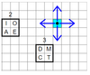

Dans la grille ci-dessous, on peut déplacer le point noir pour atteindre certaines des cases.
Votre objectif est d'atteindre une case de chacune des régions carrées. Vous pouvez changer d'échelle pour voir toutes les régions.
Les pointillés vous indiquent la direction de la prochaine zone. Notez que vous n'êtes pas obligé d'atteindre les zones dans l'ordre suggéré.
Sélectionnez une flèche à droite, puis déplacez le point noir en cliquant sur les flèches qui en partent.
Vous pouvez enregistrer de nouvelles flèches pour vous aider à vous déplacer plus efficacement.
| Échelle : 1/1 | ||||
|
|
Il vous reste X zones à atteindre, sur X. Position relative de la prochaine zone : 0,0
Vous avez atteint toutes les zones.
